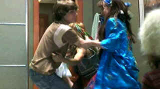

| Almost
Famous/ A,A |
| Dreamworks/2000/123/ANA
1.85 |
Almost Famous is a fabulous
movie: heartfelt,
wondrously evocative of the period and attune to its characters. I appreciate it
when a writer pours out
his love on screen and clearly Cameron Crowe does this with Almost Famous.
Gleefully autobiographical, Almost Famous chronicles
the initiation
of young misfit high schooler William Miller who finds himself through music and writing. Miller gets his
introduction to the music writing business from legendary rock rebel Lester Bangs. Bangs spreads
out the rock writing gospel to Miller and then gives the kid an opportunity to write an article
about one of his favorite bands for
his rock magazine. Miller latches on to the band and the scene with innocence and an intrepid
desire to find himself through the music and the writing. Between the back stage
bickering, the wild parties, the groupies led by pretty Penny Lane, and the bus
rides of the concert tour, Crowe paints with the colors of his subject matter. It's a great coming of age story that is
both personal and captures an era. Bravo Crowe!
 |
| Your time has
come, William. ©Dreamworks |
The obvious affection Crowe has for his characters
and the era
makes for wonderful filmmaking. Even when his view may be satiric, it's never acid. Crowe brings a
rhythm to his movie much like the music the band plays.
The casting is terrific.
Patrick Fugit's William Miller takes a bit of getting used to with his pixie innocence, but Kate Hudson is
refreshing as Penny Lane and Billy Crudup under-appreciated as heart-throb
Russell. Jason Lee may be a bit loud, but heck, he's the band's lead singer after
all. Francis McDormand centers the film like a crusty anchor as Miller's
mother.
The DVD transfer of Almost
Famous is almost perfect. Detail is captured with precision. There's no
evident edge enhancement. Scene depth is outstanding. The colors are lively,
fully saturated, and tightly controlled within their own space. A nice variety
of flesh tones are depicted with subtle shadings. Blacks are rich and contrast
and light output provide the DVD with plenty of pop Featuring both DTS and
Dolby Digital sound tracks, Almost Famous delivers dialogue, music, and
an accurate sense of sonic space with style and polish.
|
|
|
|

Selections from the Feature Archive
include articles on Akira Kurosawa, Frank
Darabont, Blonde Bimbos, Hollywood Street Gangs, or Vietnam: The
Hollywood Pariah, and many more....
Puttin on the
Ritz

Fred Astaire and Cyd Charisse bring Silk Stockings to life, a remake of
Ninotchka, one of many
films successfully turned into musicals by the Hollywood dream factory. Read all about remakes into
musicals by clicking on the divine dancers.

The
Movie Poster Archive includes extensive poster images from the films of stars like Susan Hayward,
Kirk Douglas, Katharine Hepburn and many more. Our featured star is Danny Kaye.
 
ISF Monitor Calibrations in the
Tristate New York area. Lots of hardware info and frequent hardware peaks from video expert Kevin
Miller.They may be judgmental, but that's the point, isn't it. Lots of DVD reviews plus news and
more.
 Jim
Doolittle Jim
Doolittle
ISF Instructor. Premier calibrator and expert front projection system setup technician in the
Boston area.

DVD
Demystified makes it all clear. The official Internet DVD FAQ for the rec.video.dvd
Usenet newsgroups.
|